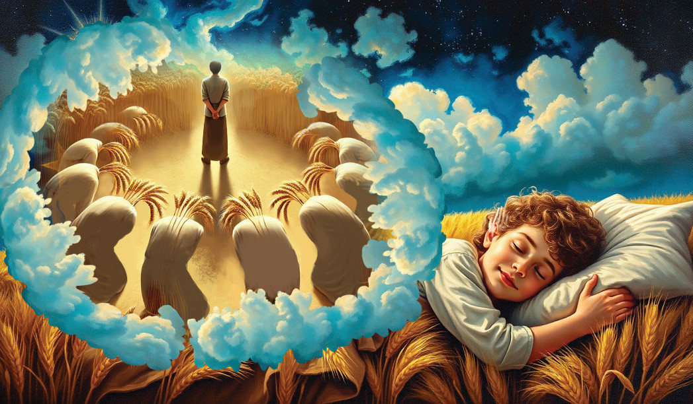

The second dream: Joseph saw the sun, the moon, and eleven stars bowing down to him.
This meant that his father, mother and the eleven brothers would one day bow down before him.
Figure 4.14 presents what was like the second dream of Joseph.
These dreams affected the relationship of Joseph and his brothers.
His brothers became jealous of him.
They hated him much for his dreams and the beautiful dress which his father gave him.